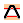
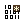
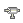
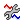

Appending a file to a loaded file (Merge)
The Merge option allows you to load additional data into the existing data in the test system. This adds the content of a setup file to the data already loaded in the test system. Also, some data stored in the test system may be replaced when using the Merge option. See the following sections for details.
You can use the Merge feature, for example, to combine several tests that you have already created, into one continuous test vector stream.
When you merge data to the data already loaded, the file name besides the icon remains the same, but the symbol * is displayed besides the file name, indicating that the data was changed and not yet saved.
To merge setup files:
- In the Test Program Explorer select the required icon. The following icons can be selected:
- Pin Configuration

Levels
Pattern (see Note below)
Pin Attributes
Analog Control
- Right-click and select Merge.
- The dialog box Select file to merge appears. Select here the file you want to append to the already loaded file.
- Click OK.Note If you selected the Pattern icon the option is Merge Pattern Files and the Merge Pattern dialog appears. For details on this task see Merging pattern files.
Functional changes
- Introduced before SmarTest 6.3.2
- SmarTest 7.1.3: Merge Pattern Files introduced